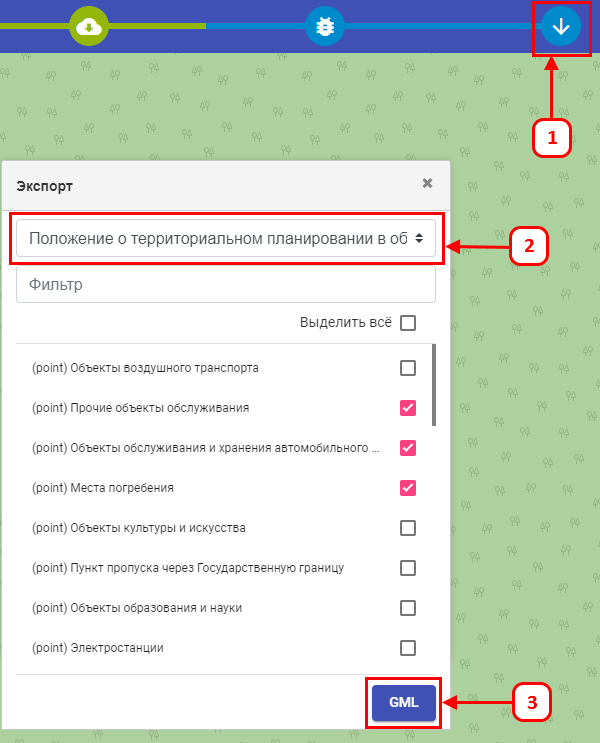
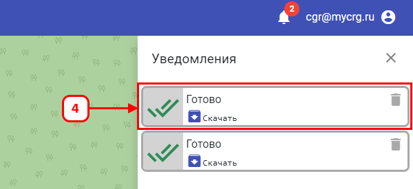

Выгрузка может быть проведена как нескольких, так и всех слоёв проекта.
Чтобы открыть форму:
-
Нажмите «Выгрузка GML».
-
Выберите необходимое положение.
-
Нажмите «GML»;

-
Открылась форма «Уведомления».
-
Найдите его в списке и нажмите «Скачать».
